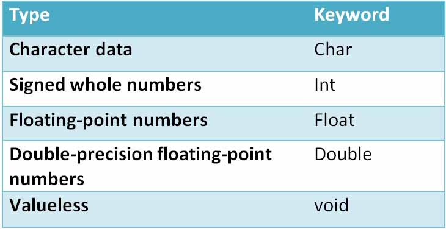
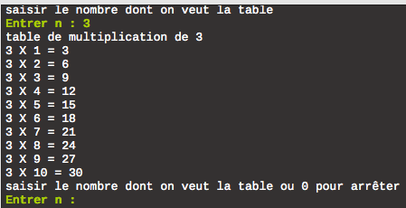

La syntaxe
Dans le langage C, la règle la plus importante, est de mettre un ; à la fin de chaque instruction.
Pour pouvoir afficher du contenu sur notre écran, nous avons besoin d'ajouter au début du programme (en dehors de la fonction principale):
#include ‹stdio.h›
De plus il faut créer une fonction principale tel que "void main (void)", ... .Cette fonction va nous permettre de pouvoir écrire notre code qui va être exécuté. Attention, le code doit être écrit entre des accolades ({}).
Exemple :
#include<"stdio.h">
void main (void){
printf("Hello World");}
Cet exemple permet d'afficher Hello Word à l'écran.
Les variables

Comme tout langage de programmation, le langage C contient ses propres variables pour pouvoir fonctionner correctement.
Voici une petite liste avec les variables les plus courantes:
- int: Donne des entiers
- double ou float: Donne des réel à virgules(le double prend plus de place mémoire que le float).
- char: Donne des caractères
Les différentes conditions
Le langage C comprend différentes conditons qui vont exécuter du code si elles sont remplies.
If/else
La condition if/else (en français si/sinon) donne un booléen. Si la valeur booléenne est TRUE, alors le bloc d'instruction dont la condition est remplie s'exécutera. Sinon ce sera l'autre bloc d'instruction.
Exemple :
int rép = 3;
int nb ;
printf("Entrez un nombre: ");
scanf("%d", &nb);
if( nb == rép){
printf("Bonne réponse");}
else{
printf("Mauvaise réponse");}

While do
La condition while permet de faire une boucle et de ne pas pouvoir la quitter tant qu'une condition n'est pas satisfaite.
Exemple :
int rép = 3;
int nb ;
printf("Entrez un nombre: ");
scanf("%d", &nb);
while( nb != rép){
printf("Pas bon redonner un nombre:");
scanf("%d", &nb);}
Dans cette exemple le programme demande à l'utilisateur de donner un nombre et tand que ce nombre ne correspond pas à 3 le programme redemande un nombre jusqu'à ce que l'utilisateur donne 3.
Do While
la condition do while à la même fonctionnnalité que la condition while sauf que il n'y a pas besoin de initialiser un int, char ou double pour pouvoir rentré dans la boucle.
For
La condition For permet de répeter un nombre de fois fixé l'instruction qui se trouve à l'intérieur.
Exemple :
int i;
for ( i = 15; i>=10; i - -){
printf("%d %, i);
}
getchar();